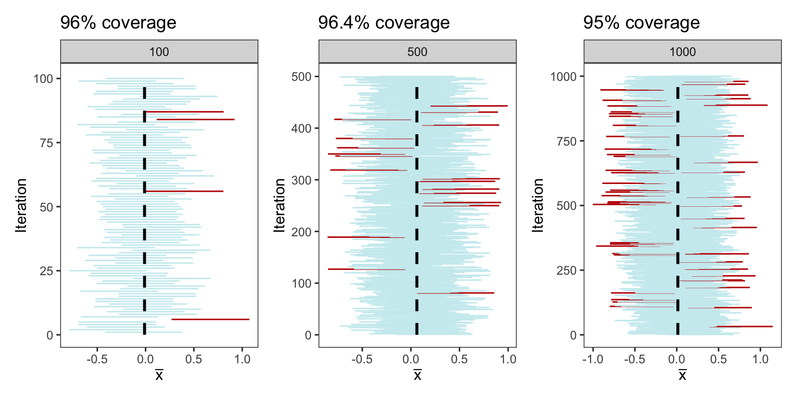
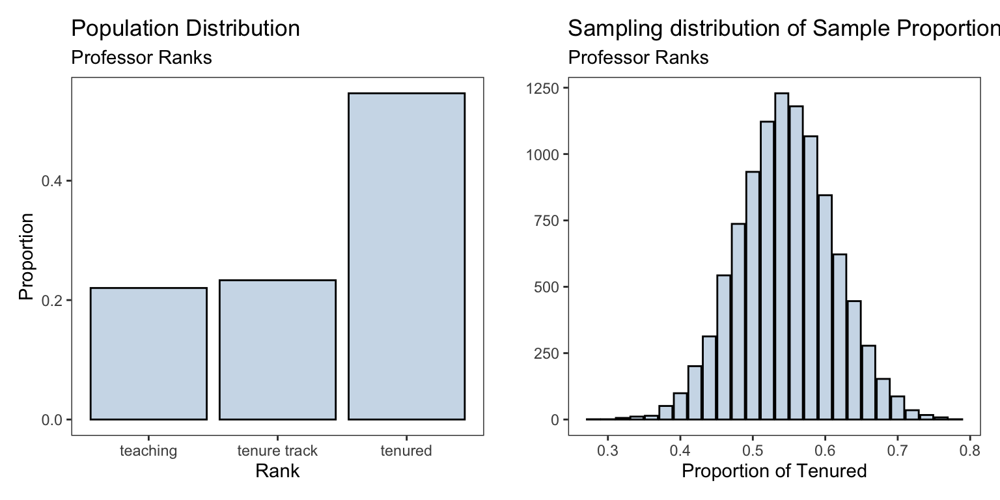

library(ggplot2)
library(patchwork)
library(openintro)Confidence Intervals
Required Packages
theme_set(theme_bw())
theme_replace(panel.grid.minor = element_blank(),
panel.grid.major = element_blank())Confidence intervals provide a range of values that indicates the level of uncertainty associated with an estimate. This helps us understand the precision of the estimate, as apposed to a point estimate.
Show Code
generate_CI <- function(sample_size,n_samples,
population_size=1000,
critical_value = 1.96){
population <- rnorm(population_size)
sample_means <- replicate(n_samples, mean(sample(population,sample_size)))
lower <- sample_means - critical_value * sd(population)/sqrt(sample_size)
upper <- sample_means + critical_value * sd(population)/sqrt(sample_size)
trial <- 1:n_samples
cover <- (mean(population) >= lower) & (mean(population) <= upper)
CIs <- data.frame(sample = trial, lower, upper, cover, n_samples)
plt <- ggplot(CIs, aes(y = trial)) +
geom_segment(aes(x=lower, y=trial, xend=upper, yend=trial, color= cover),
show.legend=FALSE) +
annotate("segment", x=mean(population), xend=mean(population),
y=0, yend=length(trial)+1, color="black",
size = 1.5) +
labs(x=expression(bar(x)), y = "Iteration",
title = paste0(100*mean(CIs$cover),'% ','coverage'))
return(plt+facet_grid(~n_samples))
}
set.seed(90)
plt <- generate_CI(sample_size = 25, n_samples = 100)From the plot above, we see that 95 of the 100 confidence intervals cover the population parameter \(\mu = 0\). While it’s important to note that if we were to repeat the simulation another 100 times, the precise count may vary, but it is highly probable that it will remain close to 95
In the below plots, we repeat the same process mentioned above but this time constructing intervals from 100, 500, and 1000 samples each of size 25. The coverage percentage is demonstrated in the title of each respective plot
Show Code
plots <- generate_CI(sample_size = 25, n_samples = 100)+
generate_CI(sample_size = 25, n_samples = 500)+
generate_CI(sample_size = 25, n_samples = 1000)+
plot_layout(ncol=3)
Inference for a Population Proportion
We consider the Professor evaluations and beauty data from the package openintro. This data was gathered from end of semester student evaluations for 463 courses taught by a sample of 94 professors from the University of Texas at Austin. In addition, six students rate the professors’ physical appearance. The result is a data frame where each row contains a different course and each column has information on the course and the professor who taught that course
professor_evaluations <- openintro::evals#> # A tibble: 6 × 23
#> course_id prof_id score rank ethnicity gender language age cls_perc_eval
#> <int> <int> <dbl> <fct> <fct> <fct> <fct> <int> <dbl>
#> 1 1 1 4.7 tenure … minority female english 36 55.8
#> 2 2 1 4.1 tenure … minority female english 36 68.8
#> 3 3 1 3.9 tenure … minority female english 36 60.8
#> 4 4 1 4.8 tenure … minority female english 36 62.6
#> 5 5 2 4.6 tenured not mino… male english 59 85
#> 6 6 2 4.3 tenured not mino… male english 59 87.5
#> # ℹ 14 more variables: cls_did_eval <int>, cls_students <int>, cls_level <fct>,
#> # cls_profs <fct>, cls_credits <fct>, bty_f1lower <int>, bty_f1upper <int>,
#> # bty_f2upper <int>, bty_m1lower <int>, bty_m1upper <int>, bty_m2upper <int>,
#> # bty_avg <dbl>, pic_outfit <fct>, pic_color <fct>We are interested in the proportion of professors who are of rank “Tenured”. The proportions of the professors ranks are shown below
table(professor_evaluations$rank) |>
prop.table()#>
#> teaching tenure track tenured
#> 0.2203024 0.2332613 0.5464363We create the sampling distribution for the sample proportion of tenured professors and compare it to the population distribution of all the professors ranks
n_samples <- 10000
sample_size <- 50
rank_proportions <- numeric(n_samples)
for(i in 1:n_samples){
sample_i = sample(professor_evaluations$rank, size = sample_size) # generate a new sample from the population
rank_proportions[i] = mean(sample_i == 'tenured') # obtain proportion for each sample
}Show Code
sampling_dist <- ggplot(data.frame(rank_proportions),
aes(rank_proportions))+
geom_bar(fill = 'steelblue',alpha = 0.3,
color = 'black')+
labs(title = 'Sampling distribution of Sample Proportion',
subtitle = "Professor Ranks",
x = 'Proportion of Tenured',y = '')pop_plt <- ggplot(professor_evaluations) +
geom_bar(mapping = aes(x = rank, y = ..prop.., group = 1), stat = "count",
fill='steelblue',alpha = 0.3,color='black')+
labs(title = 'Population Distribution',
subtitle= "Professor Ranks",
y = 'Proportion', x = 'Rank')
| Population | Sampling | |
|---|---|---|
| Shape | normal/bell-shaped | |
| Mean | \(p=\) 0.5464363 | \(\hat{p}=\) 0.546034 |
| SD | \(\sigma = \sqrt{p(1-p)} =\) 0.497839 | \(\sqrt{\frac{p(1-p)}{n}} =\) 0.0704104 |
We can form a 95% confidence interval for the population proportion of professors who are tenured rank at the University of Texas at Austin \[ \left( \hat{p} - \, 1.96 \sqrt{\frac{\hat{p}(1-\hat{p})}{n}} \, \, , \quad \hat{p}+ \, 1.96 \sqrt{\frac{\hat{p}(1-\hat{p})}{n}} \right) \]
Giving us the following 95% CI (0.408,0.684). We can see the constructed interval contains the population proportion of 0.5464363. A simple interpretaion of this confidence interval is
We are 95% confident that the population proportion of tenured professors at the University of Texas is between 0.408 and 0.684